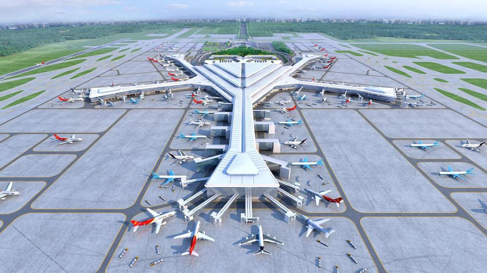

The third terminal building (T3) of the Changsha Airport
The third terminal building (T3) of the Changsha Airport is located in the city's central business district, approximately 20 kilometers away from the city center. It is a state-of-the-art terminal with advanced technology and features a modern and elegant design.
The T3 building has a total area of 63,000 square meters and includes three runways, two taxiways, several terminals, security checkpoints, and service areas. It is equipped with state-of-the-art security systems, including advanced baggage screening and passenger screening technologies, to ensure a safe and secure airport experience.

Details
Tel: 0731-96777
Address: No.1 Airport City Road, Huanghua, Changsha, Changsha, Hunan/div>
Hours: Open 24 hours